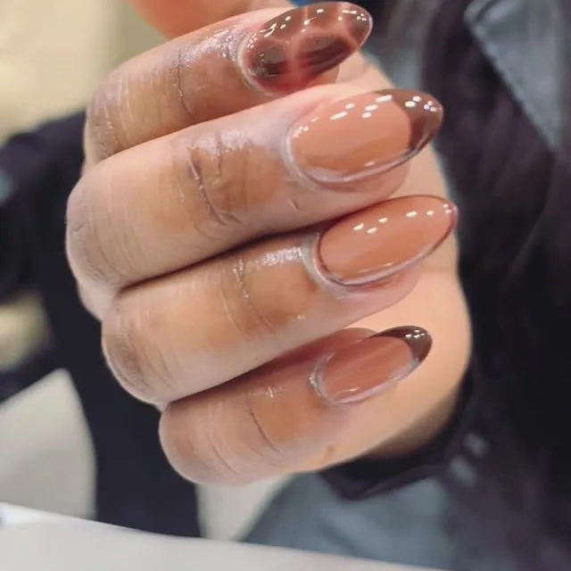

Votre semi-permanent a sauté au bout de cinq jours. Petite enquête.
Par 36 Beauté · Novembre 2026 · 2 min de lecture
Lundi, c’était parfait. Vendredi, un coin se soulève sur l’annulaire. Samedi, vous l’avez arraché dans le métro, et on ne vous jugera pas.
Un semi-permanent qui lâche trop tôt n’a pas toujours une seule cause. Voici les suspects, du plus courant au moins connu.
Suspect n° 1 : l’eau
L’ongle absorbe l’eau, gonfle légèrement, puis se rétracte en séchant. Le vernis, lui, ne suit pas ces mouvements. Longues vaisselles, bains très chauds, piscine : à force, le bord finit par se décoller. Des gants pour la vaisselle changent vraiment la donne. Ce n’est pas glamour, mais ça marche.
Suspect n° 2 : vos ongles eux-mêmes
Certains ongles sont plus gras, d’autres plus souples, et ils peuvent varier selon les périodes. Il arrive qu’une même pose tienne un mois chez une cliente et dix jours chez une autre. Si ça se répète, dites-le à votre prothésiste : ce renseignement l’aide à adapter la préparation, ou à proposer une base différente.
Suspect n° 3 : les outils improvisés
Ouvrir une canette, décoller une étiquette, gratter une tache sur un pull. Vos ongles ne sont pas des tournevis. Le pouce et l’index paient toujours en premier.
Suspect n° 4 : le calendrier
Un ongle pousse tous les jours, et votre vernis ne bouge pas avec lui. Au bout de trois semaines, le bord près de la cuticule est à découvert, et le poids du bout de l’ongle travaille davantage. Si vos ongles sont longs, c’est souvent là que le premier éclat apparaît. La pose n’a pas raté : elle est simplement arrivée à la fin de sa vie.
Ce qui nous amène à un conseil peu vendeur mais honnête : n’essayez pas de tenir cinq semaines pour faire des économies. C’est à ce moment-là que les ongles se fendent, et la réparation vous coûtera plus de patience que le rendez-vous avancé.
Le geste à ne jamais faire
Tirer. Quand vous arrachez un semi-permanent, il emporte souvent une fine couche de votre ongle. C’est ça, plus que la pose elle-même, qui laisse un ongle dédoublé et mou pendant des semaines. Au salon, la dépose est à 10 €. C’est moins cher que de patienter des mois pour que l’ongle repousse : un ongle de main pousse d’environ trois millimètres par mois.
La routine, en trente secondes
- Une goutte d’huile sur le contour de l’ongle le soir, devant une série.
- De la crème pour les mains, après le lavage si vous y pensez.
- Une petite lime dans le sac, pour traiter un accroc avant qu’il ne s’aggrave.
Et si un ongle se décolle malgré tout, un coup de fil au salon vaut mieux que deux doigts dans la bouche. Une réparation d’ongle, c’est 5 €.
On s’occupe de vos ongles ?
Prestation et créneau se choisissent sur notre page Planity.
Réserver en ligne